| Nombre | Imágenes |
|---|---|
| Paloma Callejera | 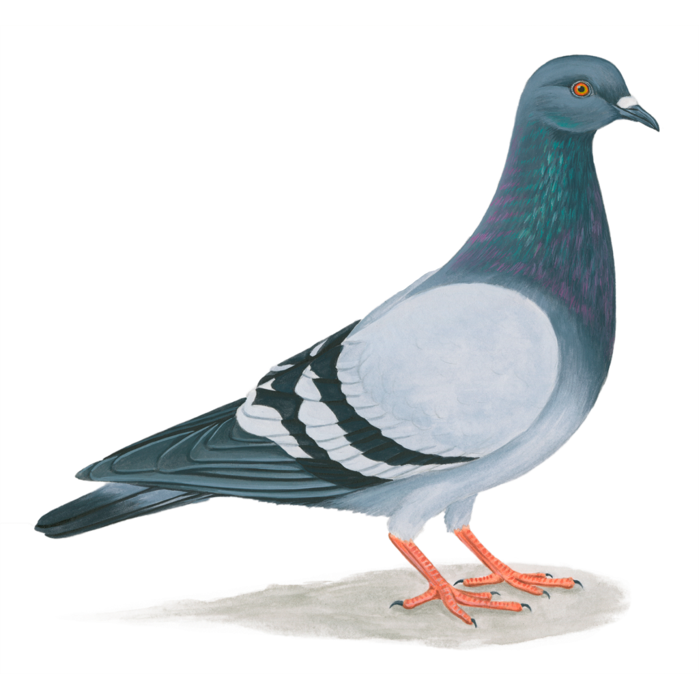 |
| Gaviota común |


|
| Gaviota Cabecinegra |  |
| Gorrión común |
 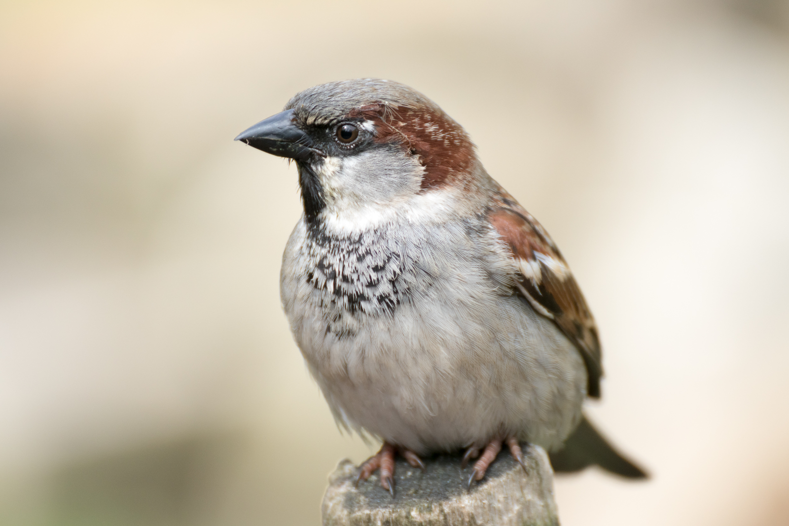
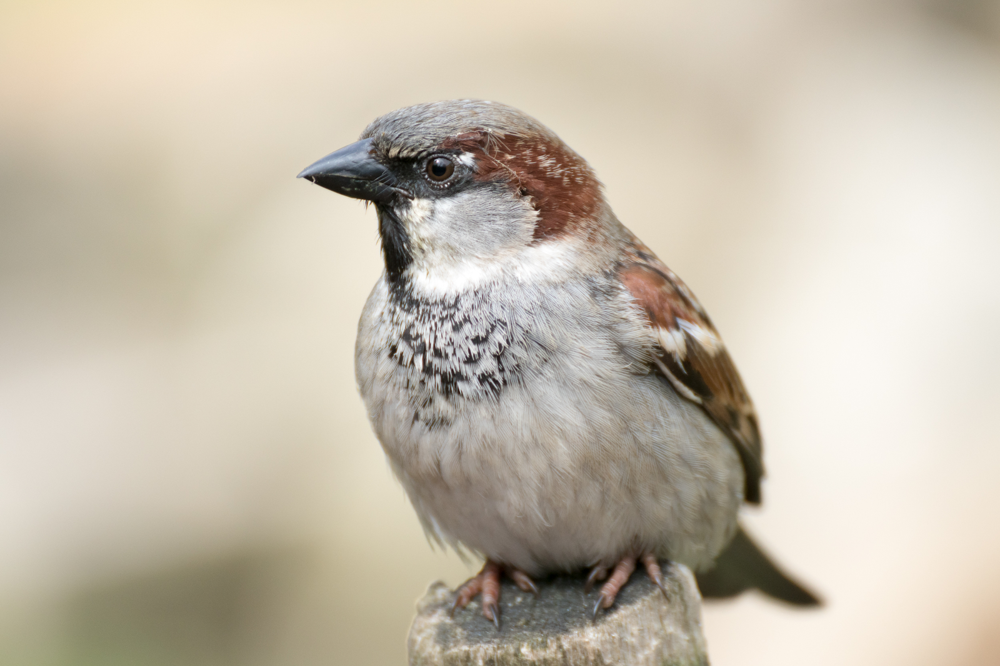
|
| Pinzón de cebra |  |
| Tórtola o Paloma turca |  |
| Tórtola torcaz |  |
| Petirrojo |  |
| Pato de collar y marrón | 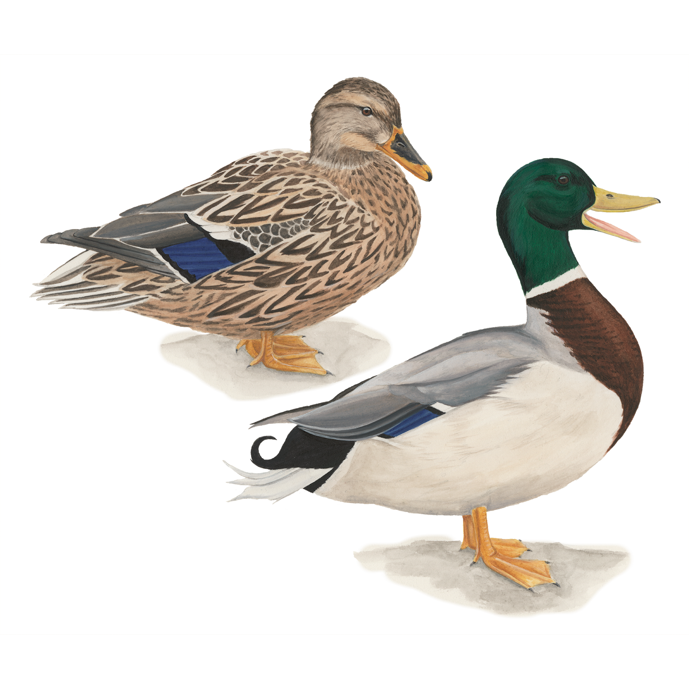 |
| Urraca | 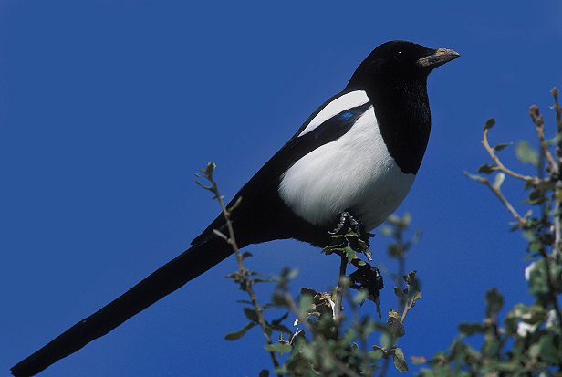 |
| Chorlitejo patinegro |  |
| Pardela balear | 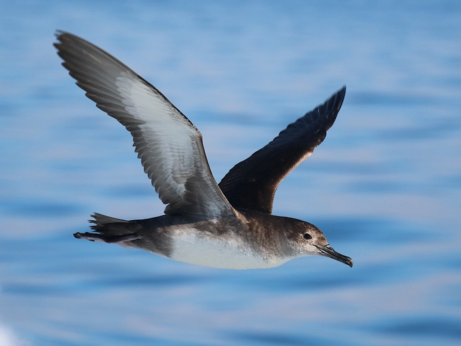 |
| Garza Real |


|
| Ganso |

 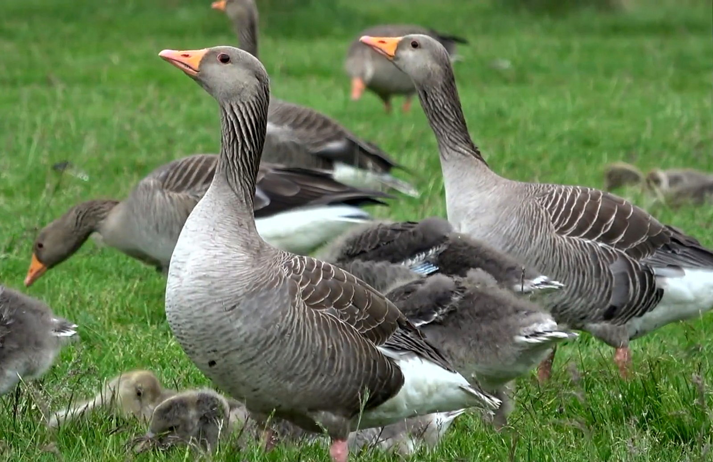
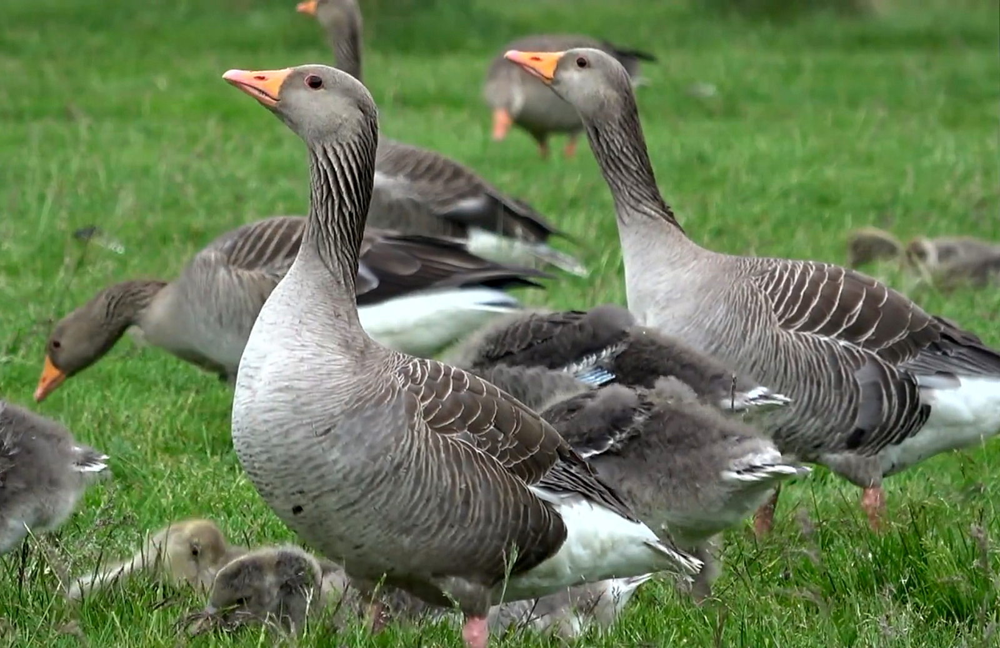
|
| Abubilla | 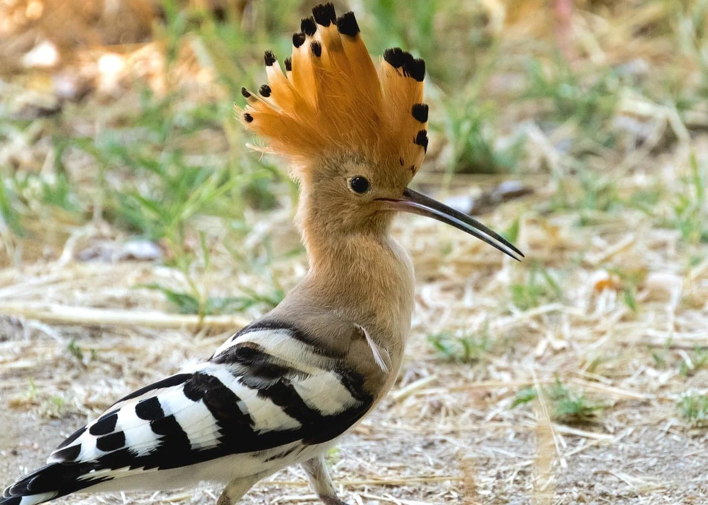 |
| Estornino negro | 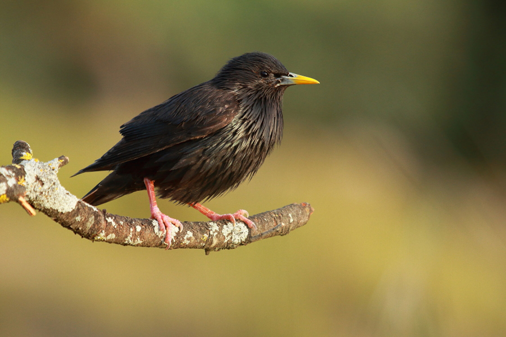 |
| Mirlo |  |
| Cotorra argentina |  |
| Cotorra de Kramer | 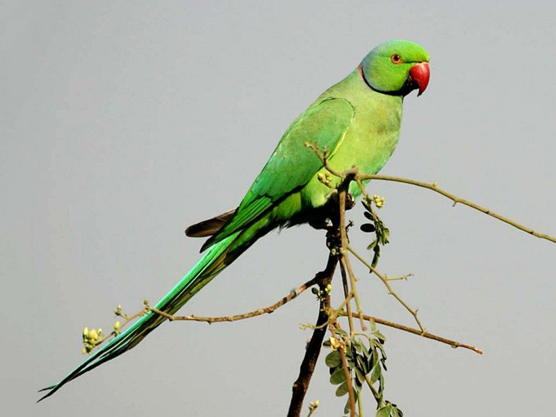 |